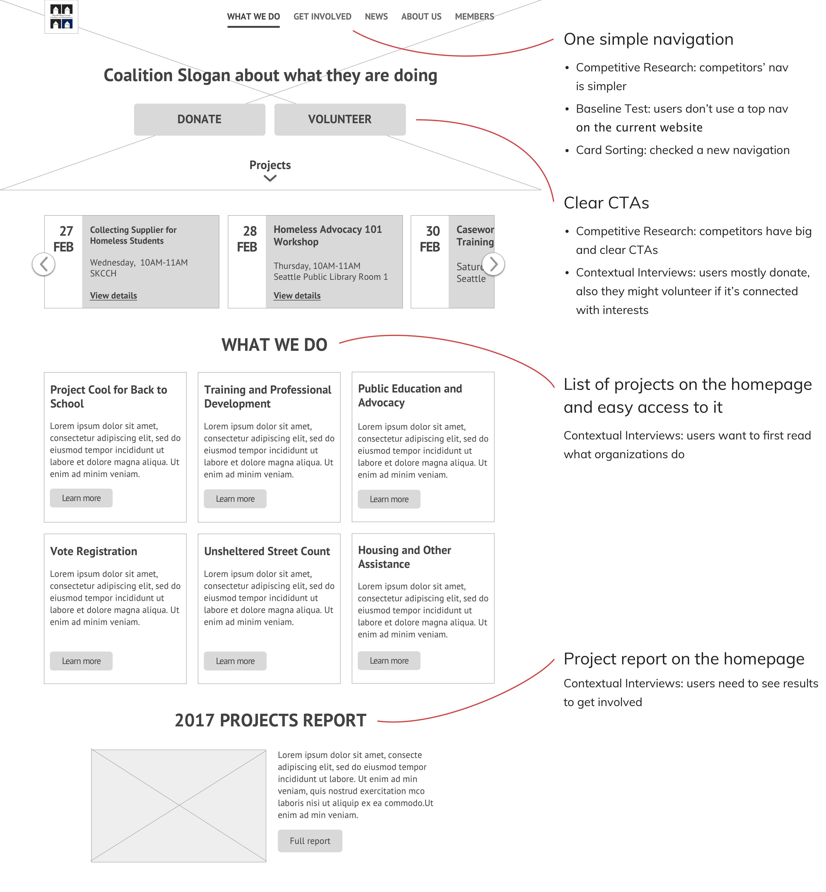
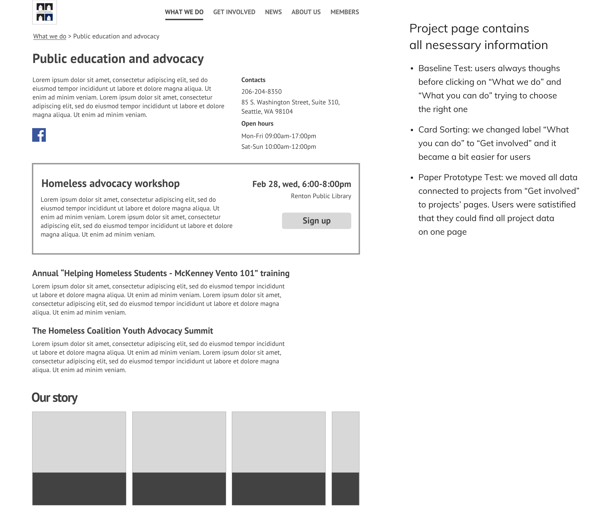

Type
College project
Role
UX Researcher, UI/UX Designer
Timeline
Jan–Mar 2018
In this class, me and my partner Jessica Pan chose Seattle King County Homeless Coalition to do user research for their website. We only touched 3 stages of the user-centered design process. In the end, we created a final presentation and several prototypes of the site redesign based on all research.
Wireframes after research

